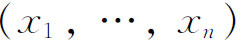

3．作为人的创造物的数学
从数学未来发展的角度看，这个世纪发生的最重要的事情是，获得了数学与自然界的关系的正确看法。对于我们评述过他们工作的许多人说来，尽管没有讨论过他们的数学观点，但是像希腊人，笛卡儿、牛顿、欧拉和许多别的人，我们却说过，他们相信数学是真实现象的准确描述，并且认为他们自己的工作揭示了天地万物的数学设计。数学确也研究抽象，但并不比物理对象（或事件）的理想形式更抽象。甚至像函数和导数这类概念，也是为真实现象所要求的，并且是为描写它们服务的。
除了已经说过的支持这种数学观点的人之外，数学家们对于几何学里空间维数的限制，更清楚地表明了数学与实际联系得何等密切。例如，在《天体》（Heaven）的第一卷里，亚里士多德就说：“直线在一个方向上有大小，平面在2个方向上有大小，而立体在3个方向上有大小；除此以外，就没有其他的大小了，因为这个3已经是全部了……不同种的大小之间不能转化，譬如从长度到面积，从面积到体积都不能转化。”在另一页上他又说：“……没有一种大小能超越3，因为没有比3维更多的，”他还加了一句，“因为3是一个完全数。”沃利斯在他的《代数》里把高维空间看成是“自然界里的怪物，它比希腊神话中狮头羊身蛇尾的或半人半马的妖怪还难以想象。”他说：“长、宽、厚占有了整个空间；连幻想也不能想象在这个3之外还有一个第4个局部的维数。”卡丹（Jerome Cardan）、笛卡儿、帕斯卡和莱布尼茨也都考虑到第4维的可能性，但都认为荒谬而排除了。事实上，只要代数被束缚于几何，则多于3个量的乘积就会被拒绝。奥扎南（Jacques Ozanam）指出过，一个多于3个字母的乘积将是“有多少字母就有多少维数”的一种度量，“但这只能是一种想象，因为在自然界里，我们并不知道任何一个多于3维的量”。
甚至在19世纪初期，数学上的高于3维的几何学还是被拒绝的。默比乌斯在他的《重心计算》（1827）中指出，在3维空间中2个互为镜像的几何图形是不能重叠的，却能够在4维空间中叠合起来。但后来他又说(6)：“然而，因为这样一种空间是不能想象的，所以叠合是不可能的。”直到19世纪60年代，库默尔还嘲弄4维几何的思想。当然，只要把几何学与物理空间的研究等同起来，则所有这些人对于高维几何的非难就都是正当的了。
但是数学家们无意中逐渐引进了一些没有或很少有直接物理意义的概念，其中负数和复数是最令人费解的。因为这两种数在自然界中没有“实在性（reality）”，所以直到19世纪初，虽已经常被人使用，但仍然受到怀疑。把负数当作是直线上一个定向的距离，把复数当作是平面上的点或向量，这种几何解释，虽然如高斯后来所说，给予负数和复数以直观意义并使它们成为可以接受的，但是可能因此推延了数学处理人为概念的实现。到后来，四元数、非欧几里得几何、几何中的复元素、n维几何、稀奇古怪的函数，以及超限数的引进，则迫使人们认识到数学的人为性（artificiality）。
非欧几里得几何对这方面的冲击前已提过（第36章第8节），现在必须考察n维几何的影响。n维空间的概念在达朗贝尔、欧拉和拉格朗日的分析著作中无关紧要地出现了。达朗贝尔在《百科全书》的“维数（dimension）”一条中提议把时间想象成第4个维数。拉格朗日在研究化二次型为标准型时无意中引进了n个变量的二次型。他在他的《分析力学》（1788）和《解析函数论》（1797）中，也把时间作为第4个维数。在后一著作中，他说：“这样，我们可以把力学看成是一种4维几何学，而把分析力学看成是解析几何的一种推广。”拉格朗日在他的著作中把3个空间坐标和表示时间的第4个坐标置于同等地位。更进一步，1828年格林（George Green）在他的关于位势理论的论文里，毫不犹豫地考虑了n维位势问题。关于这个理论，他说：“已经不再像过去那样局限于空间的3个维数了。”
在n维数上的这些早期的瓜葛，并不是有意要作为几何学本身的研究。它们只是不再受到几何束缚的分析工作的自然推广。引入n维语言，部分原因只是作为分析思维的一种便利和帮助。把

看成一个点，而把n个变量的一个方程看成是n维空间的一张超曲面。用3维空间中这些术语的意义来思考，有助于人们获得对分析工作的洞察力。事实上，柯西确实强调过，n维空间的概念在许多分析研究中是有用的，特别是在数论中(7)。严肃地研究n维几何在19世纪也进行了，虽然并不意味着有一个n维的物理空间。这门抽象几何的奠基人是格拉斯曼。在他1844年的《扩张研究》（Ausdehnungslehre）中，人们可以找到完全一般的n维几何的概念。格拉斯曼在1845年发表的一篇札记中写道：
我的扩张的演算建立了空间理论的抽象基础；即它脱离了一切空间的直观，成为一个纯粹数学的科学；只是在对［物理］空间作特殊应用时才构成几何学。
然而扩张演算中的定理并不单单是把几何结果翻译成抽象的语言；它们有非常一般的重要性，因为普通几何受［物理］空间的三个维数的限制，而抽象科学则不受这个限制。
格拉斯曼附带又说，通常意义的几何学不适当地被看成是纯粹数学的一个分支，其实它是应用数学的一个分支，因为它研究的课题并不是由智力创造的，而只是客观提供给它的。它研究物质。但他又说，应当能够创造出一种纯粹智力的课题，它把“扩张”当作一种概念来研究，而不是研究感官觉察到的空间。这样，格拉斯曼的工作就成为一种发展学术思想的观点的代表作，确认纯粹思维能够建立在可以有也可以没有物理应用的任意结构上。
与格拉斯曼相独立，凯莱也承担了用分析方法研究n维几何的任务。而且，如他所说：“无需求助于任何形而上学的概念。”在1845年的《剑桥数学杂志》（Cambridge Mathematical Journal）上，凯莱发表了“n维解析几何的几章”(8)。这个著作给出了n个变量的分析结果，当n＝3时，叙述的是关于曲面的已知定理；尽管在n维几何学中他没有做出什么特别新奇的东西，但概念是完全抓住了的。
同时，黎曼在他的1854年的《试用讲义》中写了“奠定几何学基础的几个假设”。他毫不犹豫地研究n维流形，虽然他主要关心的是3维物理空间的几何。那些遵循这篇基本文献的人——亥姆霍兹、李、克里斯托费尔、贝尔特拉米、利普希茨、达布，及其他一些人——继续做了n维空间方面的工作。
n维几何的概念即使在引进以后很长一段时期，还是受到一些数学家的顽固的抵抗。同负数、复数的情形一样，在这里，数学超越了经验提供的概念前进着，因而数学家们就不得不领悟到，他们的学科要能够考虑思维创造的概念，而如果说他们的学科曾经是自然界的一种复写的话，那么今后就不再是这样了。
可是，大约到1850年以后，人们才接受了这样一种观点，即数学能够引进并研究一些相当任意的概念和理论，或者像四元数那样，它们没有直接的物理解释，但却是有用的；或者像n维几何那样，它们满足一种普遍性的要求。汉克尔在他的《复数系理论》（Theorie der complexen Zahlensysteme，1867，第10页）中为数学辩护，说它是“纯粹的智力，一种纯粹的形式理论，其对象不是量的组合或者它们的表象——数，而是那些可以对应于实际事物或实际关系的思维的东西，即使这种对应并不必要”。
康托尔为了捍卫他所创造的超限数，说它是一种存在的、真正确定的量时，主张数学和其他领域的区别在于它自由地创造自己的概念，而无需顾及是否实际存在。1883年他说(9)：“数学在它自身的发展中完全是自由的，对它的概念的限制只在于，必须是无矛盾的并且和先前由确切定义引进的概念相协调……数学的本质就在于它的自由。”他喜欢用“自由数学”这个名词，胜过于用通常说的“纯粹数学”。
数学的新观点也蔓延到了老的以物理学为基础的分支。怀特海在他的《一般代数》（Universal Algebra，1898，第11页）中说：
……代数变换法则的合法性是不依赖于算术的。如果有依赖的话，那么显然可见，代数表达式一旦在算术上不可理解，则关于它们的所有法则就必定失去合法性。代数法则虽是由算术提供的，但却不依赖于它。代数法则完全依靠约定，用以表达某些把符号分组的模式必须被认为是等同的。这就给形成代数符号的记号指定了一定的性质。
代数学是与含义无关的一种逻辑发展。“显然我们可以用我们愿意用的任何符号，并按我们选定的任何法则去处理它们。”（第4页）怀特海指出，符号的这种任意处理可以是比较随便的，而只有那些能被赋予某种意义的或具有某种应用的解释才是重要的。
几何学也割断了它与物理实在性的联系。正如希尔伯特在他1899年的《基础》中指出的，几何学所说的东西，其性质是由公理规定的。虽然希尔伯特所说的只是为了考察数学的逻辑结构这个目的而必须用来探讨数学的一种战略，然而他支持并鼓励了数学是与自然界里的概念和法则全然不同的这样一种观点。